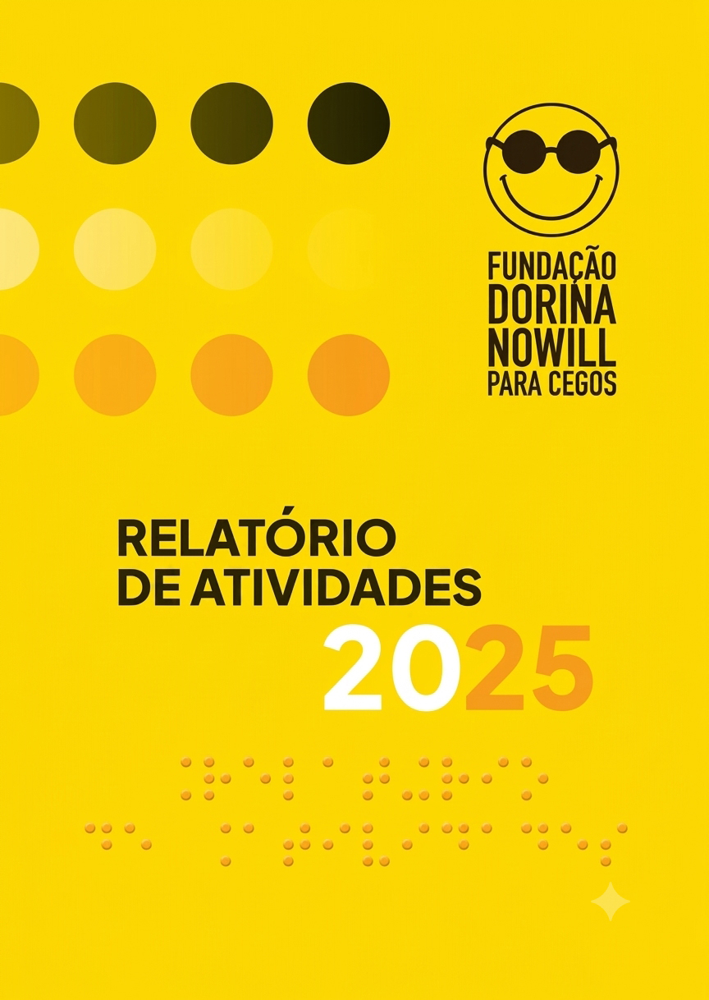

CAPA
INFORMAÇÕES DA QUARTA CAPA
SUMÁRIO, PÁGINA páginapp 2
1. INSTITUCIONAL, PÁGINA página 5
2. SERVIÇOS DE APOIO À INCLUSÃO, PÁGINA página 15
3. SOLUÇÕES EM ACESSIBILIDADE, PÁGINA página 27
4. ÁREAS ADMINISTRATIVAS, PÁGINA página 33
5. INDICADORES FINANCEIROS, PÁGINA página 57
6. CONSELHO E GESTÃO, PÁGINA página 69
LISTA DE LINKS